Technical Proficiency
First Sprint
We started our first sprint and planned out what projects to do. After being assigned to a task I spent the rest of the class time trying to understand and as I call it “Unravelling my brain”. Although I don’t have a solid solution, I am sure I can easily find out so I am mostly confident.
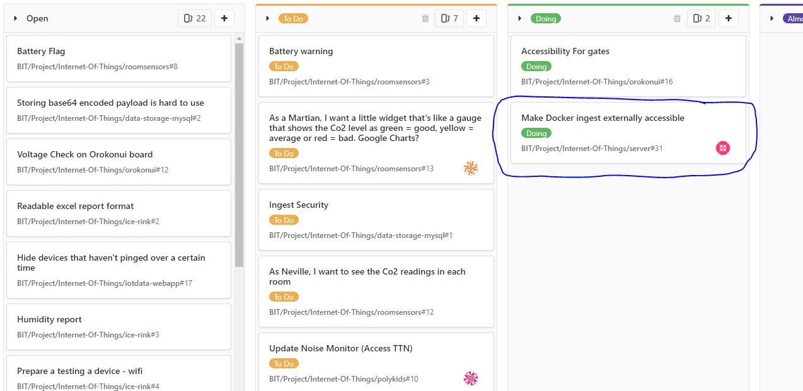Exploring Documentation & Learning Docker
GitLab is still not working we were able to view documentation, but not login. Think I have a slight
understanding toward what technical tasks need to be done. I will be looking at the containers for the
servers, which is why I was looking at the documentation for Docker. I am slowly trying to understand what
it is that I need to do but I’m still not fully sure. In my own time I need to learn Docker but also Django
as I was advised to. Bex (also in the IOT team) made me realise that I needed to use a server. So I will be
creating a server.
I was given some instructions on what it is I have to do. I created an ubuntu virtual machine and was
given a good website known as tutorialpoint.com to learn docker from scratch. I had learnt Docker in
the past but have forgot most of it unfortunately. My first attempt was a fail, I tried to use Ubuntu
Server (see image bellow) assuming that would be enough for a server and not realising that trying to create servers on a
virtualisation is different and I don't need Ubuntu Server and might be better off using a normal desktop
Ubuntu. I have now got myself to a point of understanding the basics for Docker. Now to finally make an
impact towards my ticket. The next step is to start creating a web app in order to move forward towards
my ticket.
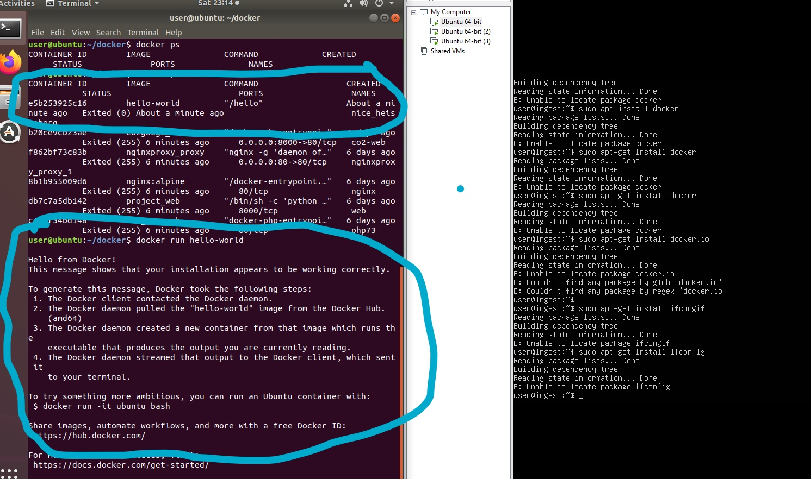
Alternative Method
Henry (former IOT student) showed me a web app he had pulled down from someones github. He had given me instructions on how to install and use it. Not realising at the time, I fully followed his instruction including installing a type of docker called docker.io. I already had docker on my vm so it showed errors as it was trying to run two types of docker at once. I thought it would be a good idea to just delete docker and reinstall, doing this broke my ingest webapp. So I learnt the hard way to be more careful with what I deleted on the vm. I am going to start again in a fresh new server. Martin introduced me to aptitude and helped me delete the extra docker packages
Local Ingest for Orokonui
I learnt the basics for docker up to the point of being able to make a web app. So then went on to create an Ingest web app locally. This took me a long time to complete and the difficulty realistically was at an intermedite level but hard for me as it took me a while to understand everything properly at the time. I watch many videos online and instructions on websites. It took me a while to learn and understand what was and what wasn't needed. I applied the knowledge I learnt from online and Martins' advice, I cut back on all the things I didn't need, for example I was creating an empty database instead of accessing an existing one or repetative lines that were not needed in the Dockerfile (I was installing mysql and pdo twice). Eventually I deployed a local ingest and though I had completed my ticket. After talking with Henry, he made me realise that it was not external and I could only use port 80 as that was the only open port. Not to say no impact was made as the ingest was Dockerfied and can be used to implement onto an external server.
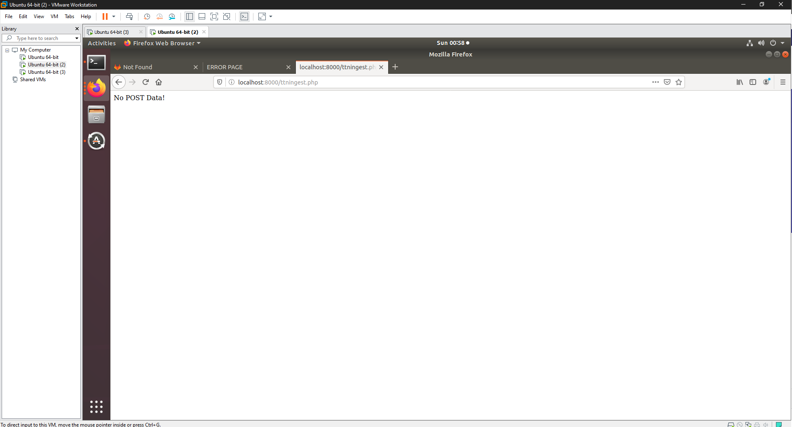Reverse Proxy
Cameron (Project member) talked to Fisal (Senior lecturer) and asked him for some advice on the best way to have external web apps. Fisal
told us about using a reverse proxy, that way we could have all our internal servers comnicate with a single reverse proxy which will
filter all the ports to use 80 then send out to TTN. This task was more complex than just deploying a web app and had many issues with web
service and ports overlapping modifying the default configuration file and for me personally trying to deploy the Orokonui web app was a bit
of a challenge as it involved things I had not done such as using a .env. Cam explained to me that it requires two containers, one for the
webapp and one for django. If the internal files had issue the entire reverse proxy would stop working and show an upstream error. Eventually
we modified the docker file, default.conf and the correct hosts files.
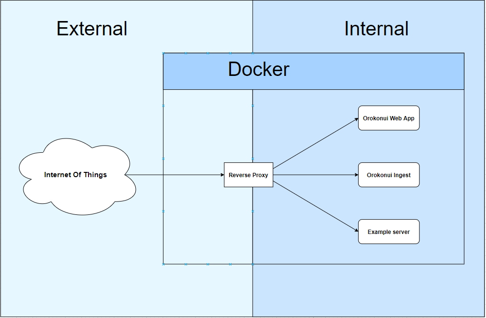
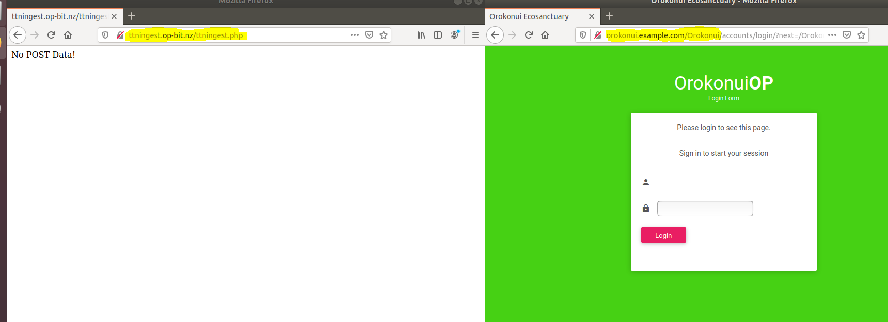
Me and Cam worked together to complete the reverse proxy. The impact was very fast as it became much easier to deploy servers to the rever proxy
However, the picture above shows the dev (staging) server, we were unavailable to deploy to the production server James (Lead member of Operations
& Security) told me very limited information on this issue as he was not allowed to say. All I was told was that they cannot create external ips.
Documentation for the Reverse Proxy
This took much longer than I first anticipated. This made me really test my knowledge, I ended up changing a lot of things that I was doing wrong
originally such as hosts inside the server instead of the physical machine. My aim was to make the instructions super easy to follow. Making a
document 'easy' was actually harder as I had to apply clear instructions, I aimed for one sentence instructions to keep it simple. Although this
task wasn't so complex, it made me think and change thing and was time consuming. Bex was given the task of testing and was able to complete the
task without need of assistance.
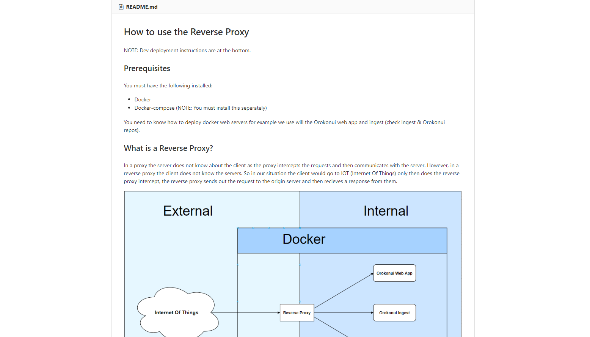
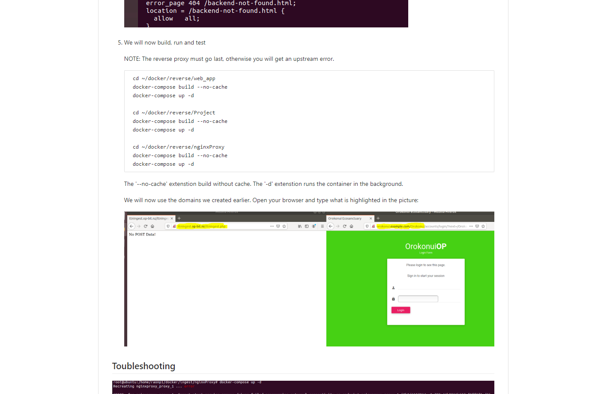
Testing C02 Gauge
I took on the task of testing the c02 gauge that Callam (IOT member) has been working on. Most of his documentation does not help the testing side of things and was confusing. Callam directed me to where the cuurent files are and eventually it started to work fine.
Dockerfying and deploying C02 Gauge on Dev server
The picture bellow shows the ticket in the done section as it is fully complete. Deploying the C02 gauge was simple now that I have done similar tasks. Locally deployment had no problems other than a typo. 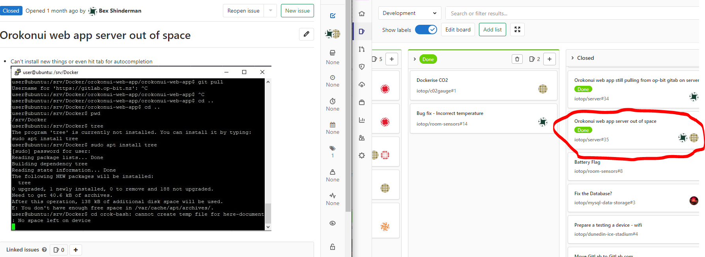
Even though it wasn't a hard challenge, deploying the C02 gauge to the Dev server has help solidfy my basic understandings and using of the reverse proxy. I made multiple silly mistakes which such as typos but it took me till class to realise that I have not been updating the connect.ict.php file inside my container but the one outside the container. The red blured lines showed the outdated password.
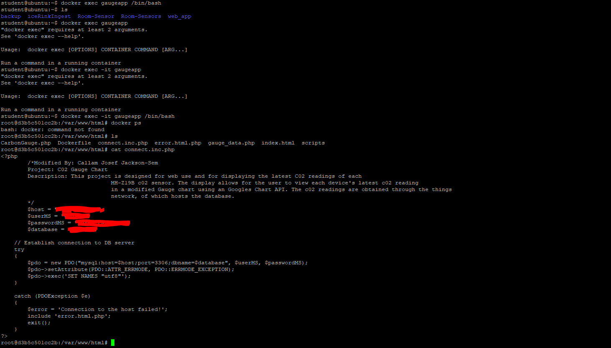Deployment for the C02 Gauge
The documentaion for C02 Gauge was simple and short. There two parts, locally deploying and deploying on dev. There is usually a supress error that shows up on the reverse proxy when you docker-compose run, that is because there is no index.html. I created a basic index with two links redirecting to either /Carbon Gauge or /Gauge data, so now there is no need to type the exact url.
Local C02 Gauge
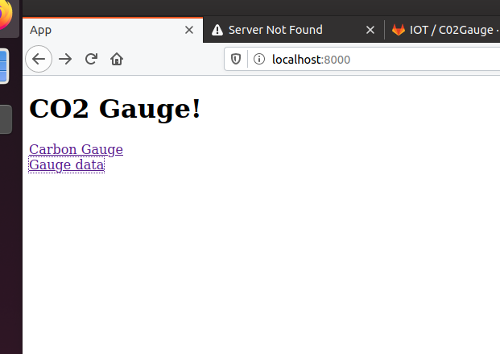Dev C02 Gauge
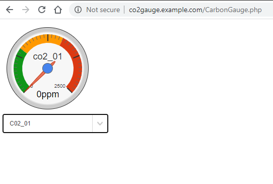C02 Gauge Documentation
The documentaion for C02 Gauge was simple and short. There two parts, locally deploying and deploying on dev.
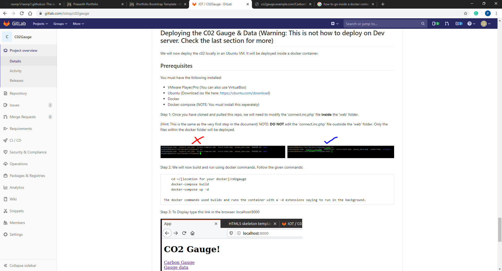
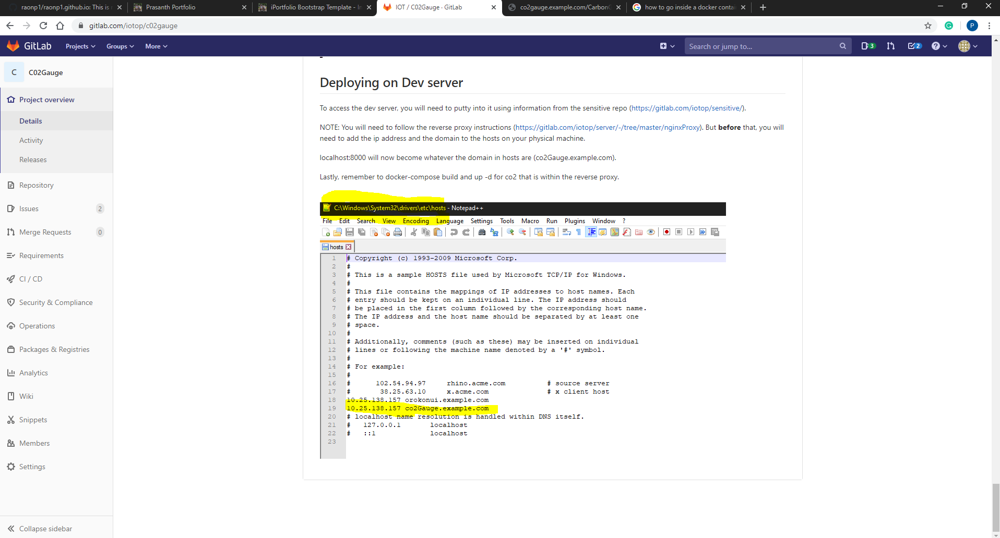
Professional proficiency
Start
We had a meeting covering a basic introduction to the other members and learnt about what the
Internet of Things is. Martin (our lecturer/supervisor) explained the basic theory and talked about
current client projects such as Orokonui. We learnt what IOT is and how we use TTN to connect to
'things' (our devices). He showed us what IOT is made up of, by drawing a diagram and showing us
the structure.
After the class session I did some more googling and learnt more LoRaWAN and what IOT is in general.
After seeing examples of IOT in our daily devices like a FitBit, I realised that if there is internet
connectivity with data communication on a device, its IOT. From a poster on the wall in our IOT room
(see bellow), I got a brief idea about the steps invovled. The poster clarified for me where my role
is and where exactly it fits in with IOT.
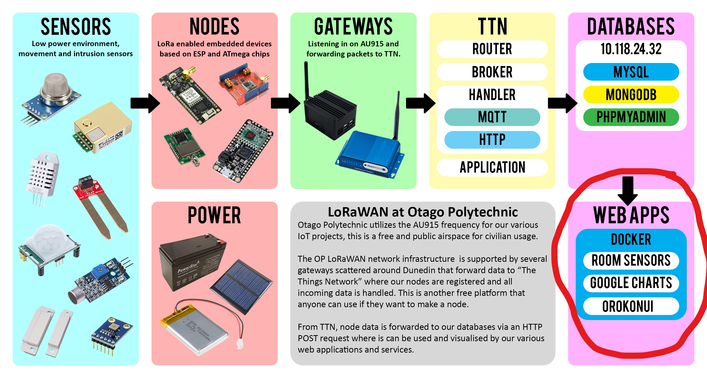
Webex Meetings
Due to the whole covid outbreak, we are now forced to comunicate online and have our classes/meetings online. This made it difficult for us to comunicate and get needed help. None of us were use to being taught in an online class and had slowed down our work pace abruptly. As time went along we eventually learnt to adapt to the heavy impact towards our learning environment, getting help was still harder but got better over time.
Team Communication and Scrum meetings
It has been hard trying to get help while being stuck at home, I was asking Martin for help but didn't want to bombard him with questions as he is a busy man and I'm not the only one who needs his help. In our meeting today, Martin advised us to comunicate with each other (as in the team) more. Our teams chat is not as active as it should be. We all agreed with Martin and created a seperate IOT team group. Me and Bex decided to work together via discord video chat. One of us would screen share and the other would help. I said that I would be scrum master for a few weeks now but did not know the role and the importance of the role. I knew I had to lead the meeting but did not know how and felt very uncomfortable. Martin told me to make sure I do some reasearch before I lead the next scrum.
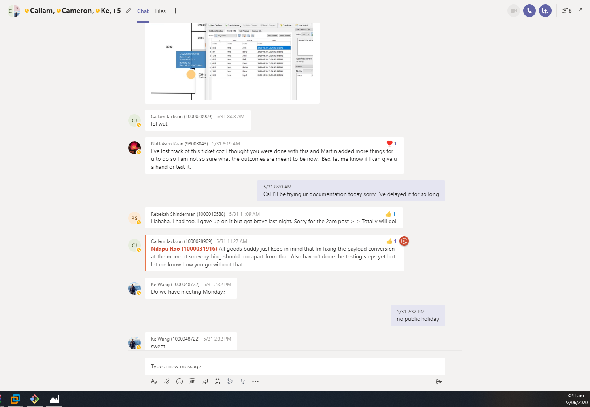Working on tasks through video call
As I mentioned just before, me and Bex worked on Discord to get tasks and would arrange three days within the week to work on tasks. A good example on what we actually did was when we were working on the ticket to where the production server had nearly no space left. At the time we had no idea about whether it was safe to use docker system prune and manually deleted line after line. lines of unused images.
The image bellow is us showing a recent example of us working together. Just a simple but useful docker prune (I have censored out Bex as this is her personal discord).
Scrum Master
In order to understand the role of scrum master, I went back and did some revision on Agile and scrums in
general first. I then went on understand the roles in agile and what each role has to do. I continued to
learnt about the dos and don'ts of a Scrum Master and watched examples of a Scrum Master in meetings, after
seeing this diagram it clicked). I asked Bee (project lead) for some advice on leading, she gave me a lot
of help especially about being a Scrum Master.
Here are the Do's and DON'Ts:
Do:
1. Facilitate the product owner to maintain and prioritize the Product Backlog and own the business decisions;
2 Help the team members to come up with most realistic estimations they can;
3. Help the team members to make right technology decision;
4. Inspire the team members to pull and own the tasks and work with them to remove any impediments that are holding them back to achieve those tasks;
5. Facilitate self-organization within the team.
Don't:
1. Own the product decisions on Product Owner’s behalf;
2. Make estimates on team’s behalf;
3. Make the technology decisions on team’s behalf;
4. Assign the tasks to the team members;
5. Try to manage the team.
The time has come for our next meeting,
I am very nervous. I had prepared notes about what to say and do. I kept it kept the meeting agile and
focused on three things.
1. What did you do yesterday;
2. What are you going to;
3.
Are there any obstacles and ask if they needed help.
I would finish the scrum by passing the meeting on to
Martin. This was actually harder than I thought and I actually missed one member of our IOT group,
it is not easy for me to lead and take on others responsibilities. However, being a Scrum Master made me
pay more attention for what my team members are working on. My role as a Scrum Master was not limited to
just the meetings, I knew that I needed to put the team before me so I messaged all of
my team mates and asked them if everything is okay and how their project is going and offer help.
(I decided it was best keep those messages private)
The three Debriefs
Due to covid, we only had one one-on-one in person but have had two through video chatting. In the first
debrief Martin told me to focus documentation, at the time I thought that it would make no sense to start
a documentation whern its incomeplete. I was wrong and will do documentation even if its just bit by bit.
Next thing Martin told me about was to start my portfolio.
The is the first one-on-one online. At this stage, I was not doing so well and had gotten lazy due to no
schedule with covid. I was honest with Martin and told him I was doing bad, he told me to focus on getting
the task done and documentation as how important documentations are for future students.
Dockerise and Deploying Noisemap
Me and Bex worked together to help Suresh (IOT member) dockerise the Noisemap. We would communicate through teams. We tried to do video chats with screen sharing but screenshare would freeze. Later on, I helped Suresh by fixing his build and updating some of his files. I was not able to help him fully, so I arranged a time for me Cam and suresh to meet up tomorrow. Eventually the Noisemap started to work.
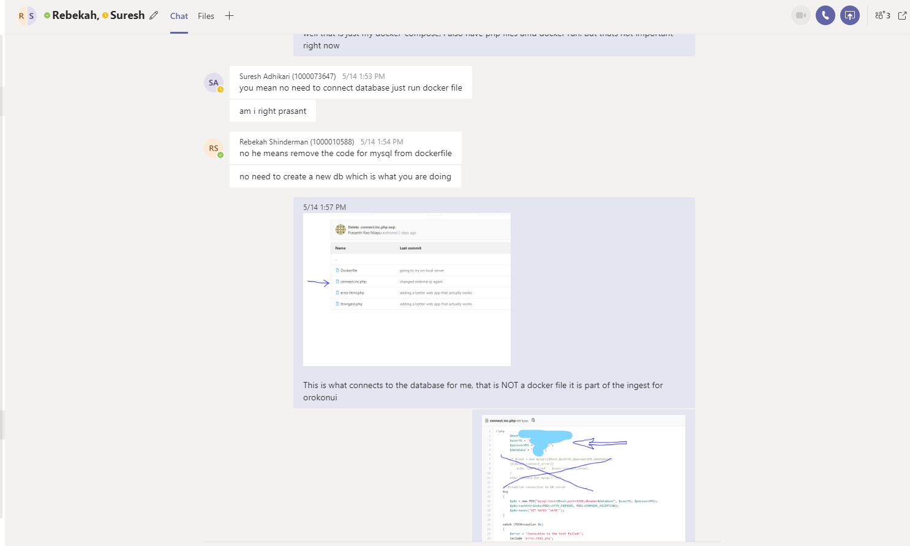Retospective
Bee organised retrospectives half way thought the semester where she would ask us three things:
1) What Successes did you have?
2) What barriers were involved?
3) What could you have done better?
The aim of a retrospective scrum is to reflect back on how the sprint went so we can improve
for the future sprints. Although for us, we didn't always have completed tasks but we would
have the chance to understand what it is we are doing.

Volunteering - Audacious
This was a completely new experience for me and Audacious. This was the first time Audacious ran their
workshop classes online and they did a good job, although we have no other option I still prefer in
person. Main goal for is an investment idea, but its more actually more than that, we get guidance From
real professionals specilised in jobs such as marketing or a lawyer. Audacious manages to keep the
classes interesting and there is always something new to talk about.
My idea for Audacious didn't go so well, not because my idea is bad but more because I haven't given enough of my time and will to come back next semester.
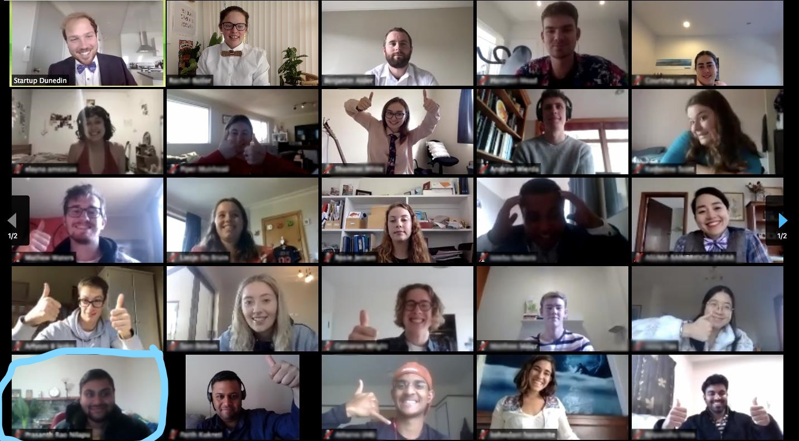